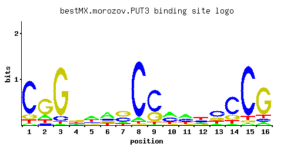

PUT3
YKL015W
Transcriptional activator of proline utilization genes, constitutively binds PUT1 and PUT2 promoter sequences and undergoes a conformational change to form the active state; has a Zn(2)-Cys(6) binuclear cluster domain
Best-performing DNA-binding model.

View and copy the recommended matrices ↘
A | 0.045 0.168 0.021 0.178 0.446 0.513 0.105 0.060 0.026 0.403 0.387 0.179 0.077 0.046 0.035 0.080 C | 0.781 0.068 0.086 0.201 0.163 0.179 0.335 0.892 0.649 0.369 0.337 0.299 0.498 0.658 0.869 0.086 G | 0.109 0.649 0.859 0.367 0.162 0.168 0.461 0.018 0.278 0.077 0.066 0.126 0.235 0.183 0.038 0.749 T | 0.065 0.115 0.034 0.255 0.228 0.140 0.099 0.030 0.047 0.152 0.210 0.396 0.191 0.113 0.058 0.086
A | 4 16 2 17 44 51 10 6 2 40 38 17 7 4 3 8 C | 78 6 8 20 16 17 33 89 64 36 33 29 49 65 86 8 G | 10 64 85 36 16 16 46 1 27 7 6 12 23 18 3 74 T | 6 11 3 25 22 14 9 3 4 15 21 39 19 11 5 8
A | -1.96 -0.64 -2.72 -0.59 0.33 0.47 -1.11 -1.67 -2.51 0.23 0.19 -0.58 -1.42 -1.94 -2.21 -1.39 C | 1.47 -0.97 -0.74 0.11 -0.10 -0.01 0.62 1.60 1.28 0.72 0.63 0.51 1.02 1.30 1.57 -0.74 G | -0.50 1.28 1.56 0.71 -0.11 -0.07 0.94 -2.30 0.43 -0.85 -1.00 -0.36 0.27 0.02 -1.56 1.43 T | -1.59 -1.02 -2.24 -0.23 -0.34 -0.83 -1.17 -2.37 -1.92 -0.74 -0.42 0.21 -0.52 -1.04 -1.71 -1.31
Alternative candidate matrices 9
Historical matrix candidates from the original ScerTF database. Expand a source to inspect its original logo, scores, and matrix values.
PUT3Badis et. al.P = 0.2237View matrix ↘
PUT3_AFoat et. al.P = 0.04009View matrix ↘
PUT3_BFoat et. al.P = 0.02273View matrix ↘
PUT3_CFoat et. al.P = 0.3275View matrix ↘
PUT3Harbison et. al.P = 6.52e-08View matrix ↘
PUT3Macisaac et. alP = 3.16e-11View matrix ↘
PUT3Pachkov et alP = 2.94e-07View matrix ↘
PUT3Zhu et. al.P = 0.009692View matrix ↘
PUT3Zhao and StormoP = 0.01608View matrix ↘
Gene-level annotations and interactions.
Genes bound in ChIP-chip experiments 63 genes
YAL004W, YAR068W, YBL032W, YBL033C, YBL063W, YBL064C, YBR035C, YBR161W, YBR230C, YDL014W, YDL015C, YDL020C, YDL024C, YDL045W-A, YDL129W, YDL191W, YDL215C, YDR226W, YDR306C, YEL055C, YER060W, YER093C-A, YER137C, YER159C, YFR032C, YFR035C, YGL103W, YGL104C, YGL123W, YGL124C, YGR123C, YGR124W, YGR125W, YGR239C, YGR256W, YHL034C, YHR033W, YHR037W, YIL133C, YJL045W, YKL123W, YKL124W, YKR073C, YLL027W, YLR055C, YLR056W, YLR139C, YLR142W, YLR152C, YML102W, YML103C, YML124C, YNL016W, YNL017C, YOL026C, YOL155C, YOR236W, YOR272W, YOR302W, YOR303W, YOR306C, YPL130W, YPR149W
Genes affected by TF deletion 177 genes
YCR010C, YCR040W, YGR280C, YGR282C, YJR020W, YKR012C, YOR225W, YFR032C-A, YGL009C, YLR025W, YMR194W, YBR031W, YCR013C, YGR279C, YIL082W, YKR042W, YKR013W, YMR044W, YOR194C, YOR226C, YCR097W-A, YGR096W, YHR142W, YHR143W-A, YJL118W, YLR089C, YOR066W, YPL048W, YCR073W-A, YFL012W, YFR005C, YHR025W, YIR034C, YLR340W, YLR372W, YLR374C, YNL149C, YOR347C, YOR351C, YPL187W, YBR283C, YER026C, YHR208W, YML085C, YBR067C, YDR461W, YKL015W, YLR339C, YNL110C, YNL146W, YCL018W, YDL191W, YER083C, YIL015W, YIL019W, YKL136W, YLR185W, YML055W, YNL300W, YLR287C-A, YNL058C, YNL030W, YOR229W, YDL133C-A, YDL136W, YFR044C, YHR123W, YLR439W, YMR230W, YNL279W, YDR077W, YER154W, YGL237C, YIL153W, YNL057W, YJR148W, YAL012W, YAL014C, YBR168W, YER001W, YER003C, YLR101C, YMR169C, YDR502C, YFL018C, YOL144W, YOL086C, YPL195W, YKL209C, YKL178C, YMR260C, YPL092W, YHR199C, YLR343W, YLR349W, YOL143C, YNL041C, YNR043W, YAR075W, YBL032W, YHR216W, YJL158C, YKL146W, YKL177W, YML090W, YCR059C, YER131W, YHR010W, YIL100W, YKR093W, YOR239W, YHR190W, YLR040C, YLR420W, YDL058W, YCL066W, YHR005C-A, YKR086W, YML126C, YOR210W, YAL018C, YAL022C, YDL113C, YER008C, YGR109W-A, YKL120W, YLR041W, YOR084W, YCR097W, YFL026W, YHR037W, YHR072W-A, YOL126C, YOR383C, YGL089C, YMR304C-A, YFL023W, YNL162W, YGR233C, YJR004C, YKL216W, YNR042W, YNR044W, YNL322C, YDR056C, YGL256W, YLR303W, YOR247W, YER019C-A, YEL038W, YGR172C, YGR148C, YHR141C, YJL079C, YML019W, YNL263C, YOR063W, YLR302C, YNL045W, YOR248W, YGL032C, YLR051C, YBR118W, YFL037W, YOR307C, YPR012W, YOR034C, YCL009C, YDL184C, YGR274C, YJR009C, YKL164C, YMR276W, YMR305C, YOR306C, YER073W, YOR182C
Genes supported by both experiments 4 genes
YBL032W, YDL191W, YHR037W, YOR306C